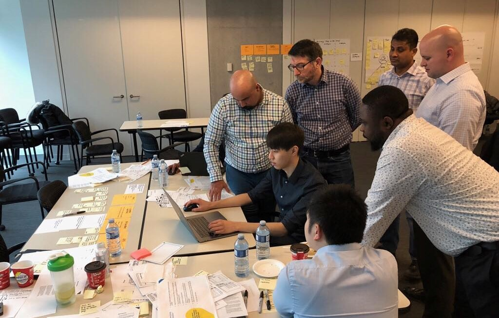

Tools: Sketch, InVision, HTML, CSS, Photoshop, Illustrator
My role
Last winter, I was a part of Xperience First (X1), the newly formed centre of excellence for design within RBC Wealth Management. The team included a total of four UI/UX and product designers (including me), one design strategist, and one design lead. Our goal was to facilitate the adoption of human-centred design into the entirety of WMTS (Wealth Managament Technology & Solutions).
For privacy reasons, I'm unable to display RBC projects on my portfolio. However, I've been given permission to show them in-person.
Reimagining wire transfers
A major project our team worked on was the redesign of an internal wire transfer application. We were tasked with improving the user experience, interface, and overall process when using said application, as well as ensuring user adoption of the new tool.
Before we could begin redesigning the application, we needed to fully understand what it was used for, how it was used, and its current problems. We conducted ten interviews with end-users, learning about each and every one of their touch points and general pain points. Five personas and user journey maps were formed from the collected data, which were used to establish empathy with the end-users, allowing us to truly understand the problem space. Additional data was gathered from talking with subject matter experts and application specialists.
In summary, we discovered that the current payments (wire transfer) process was highly manual, as it involved several manual touch points for every single transaction, where multiple quality checks and reworks were required to migitate risks. To keep ourselves on track to solve this problem, we set a 'How Might We...?' statement and several benchmarks for the future state regarding risk reduction, efficiency, and the overall experience. These benchmarks were formed from end-user's expectations of future features (ex. simplified screens, improved UI navigation, single sign-on, etc.).
Now with a much stronger understanding of the problem and current application, we began the redesign. Over the course of a two-day workshop with the business side, we quickly mocked up some wireframes and put together an InVision prototype.
 The prototype was tested with six end-users who provided feedback accordingly. Without going into application specific details, some of the top findings we uncovered from the usability testing sessions inlcuded:
The prototype was tested with six end-users who provided feedback accordingly. Without going into application specific details, some of the top findings we uncovered from the usability testing sessions inlcuded:
- Users were excited around the application being simple & straightforward
- Auto-populated fields were highly valuable to save time, reduce cognitive load, and check for accurate information
- Users desired a way to keep records on file, easily retrieve order details, and easily share details with relevant stakeholders
- Labeling needed to be more specific and provide more context
DT workshops & conferences
Besides redesigning digital applications and processes, our team also facilitated design thinking workshops & conferences for RBC employees. The purpose of these workshops and conferences was to train different teams in using a design thinking approach. Designers aren't the only ones who can utilize design methods and we wanted to emphasize that within RBC.
During these workshops & conferences, we'd present a real business problem to different teams to solve. We would then guide them through a condensed 'design sprint' to get them started. The teams would spend a day experimenting with empathy mapping, user ecosystem mapping, client journey mapping, forming 'How Might We...?' statements, and ideating (Crazy 8's). Near the end of the day, each team would sketch out their solution. The following day, a designer (me) would take their sketches and rapidly design and create a digital prototype. Pictured below is me working together with one of the cross-disciplinary teams on the design of their solution.

Following this, an end-user would test each of the teams' solutions and provide feedback. Changes would be made based on the feedback and each team would present their final solution to the workshop & conference sponsors/stakeholders.
By the end of the workshop/conference, each attendee would leave with a new skill and tool for problem solving that they could apply to their jobs and everyday life.
Growing Xperience First
Started in December of 2017, Xperience First was relatively unknown within RBC when I began my internship. In order to raise awareness about our team and the services we provided, I iteratively designed and developed an Xperience First website, avaiable for all RBC employees to access through RBC's internal social platform.
It began with simple paper and pen wireframes, then moved to HTML and CSS prototypes. After discussing possible improvements on the design with the team, I made some changes and developed a final website that's still being used today. Conception to completion of the website was 3 weeks.